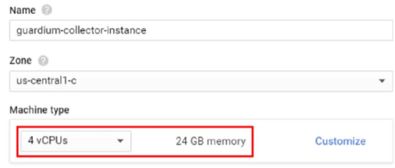
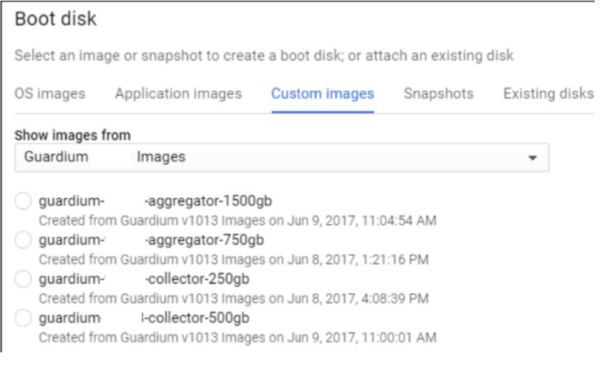
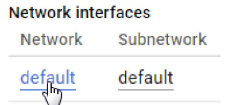
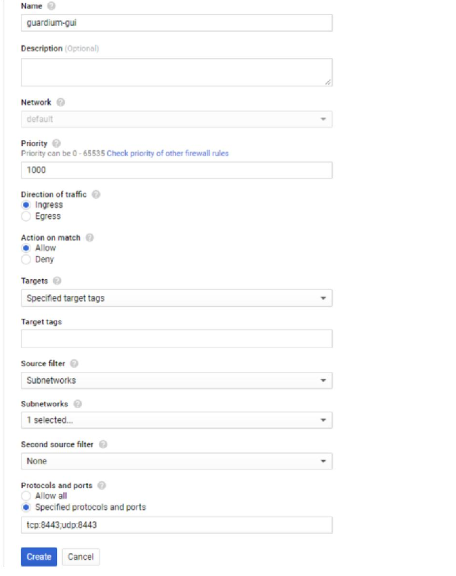

- Procedimento de Implantação:
1. Navegue até https://console.cloud.google.com
2. Selecione seu projeto do Google para implementar o(s) dispositivo(s) Guardium.
3. No painel do menu, navegue até Compute Engine
4. Clique em instâncias de VM
5. Clique em Criar Instância
a. Forneça um nome para a instância
b. Selecione uma zona
c. Selecione um tipo de máquina
Observação: o IBM Security Guardium requer no mínimo 4 vCPUs e 24 GB de RAM.

d. Na seção Disco de inicialização, clique em Alterar
i. Clique na guia Imagens personalizadas
ii. Em Mostrar imagens de, selecione o projeto Guardium Images
iii. Na lista de imagens, selecione a imagem do IBM Security Guardium por
seus requerimentos

iv. Clique em Selecionar
e. Clique em Criar para implantar a VM
- Configurando a Rede
Depois que a instância é criada, ela aparece na página Instâncias de VM. Por padrão, a maioria das portas são
bloqueado pelo firewall. Para configurar as regras de firewall e abrir portas específicas, siga os passos
abaixo.
1. Clique no nome da instância
Role para baixo até Interfaces de rede e clique no nome da rede

Role para baixo até Regras de firewall e clique em Adicionar regra de firewall
Digite um nome para a regra de firewall
Insira uma descrição
Em Filtro de origem, selecione Sub-redes
No menu suspenso Sub-redes, selecione as sub-redes que se aplicam
ao seu ambiente
Em Protocolos e portas, adicione as seguintes portas: “tcp:8443;udp:8443” para
ser capaz de se conectar à GUI

Clique em Criar
Repita a etapa 8 para as seguintes portas:
• Para GIM: “tcp:8444-8446; tcp:8081”
• Para FAM: “tcp:16022-16023”
• Para Unix STAP: “tcp:16016-16018”
• Para Windows STAP: “tcp:9500-9501”
• Para Pesquisa Rápida: “tcp:8983; tcp:9983
• Para MySQL: “tcp:3306”
-Conectando-se ao Guardium Appliance na nuvem
Para se conectar ao dispositivo Guardium configurado com as regras de firewall acima, você
precisa estabelecer uma conexão VPN e conectar sua rede existente ao Google
Rede da plataforma de nuvem. Aqui estão as etapas que descrevem como criar um configure um
Conexão VPN no Google Cloud.
- Conecte-se à GUI
Depois de estabelecer uma conexão VPN, abra um navegador da Web neste endereço:
https://